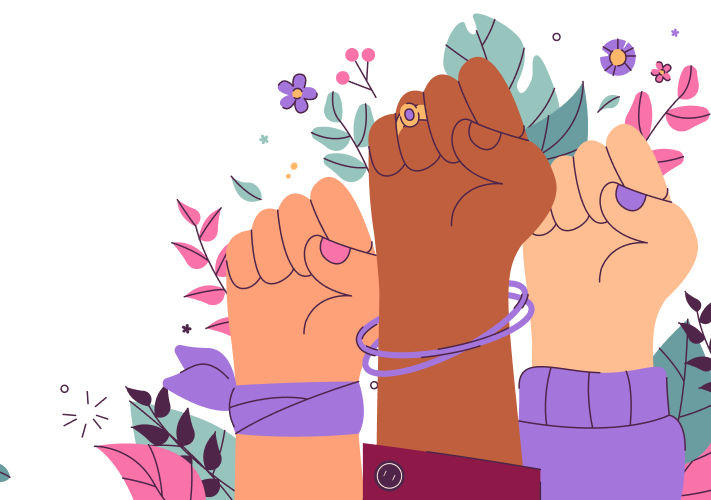

Voltar
Apoio em Pernambuco
Você não está sozinha.
Encontrar ajuda deve ser simples.
Responda algumas perguntas de sim ou não. Vamos indicar o tipo de apoio ideal para você e onde encontrá-lo.

Precisa de ajuda urgente? Acesse os canais oficiais:
Pergunta 1
Apoio indicado para você
Ligar 190 agora
Se alguém estiver por perto, use o botão Saída rápida no canto da tela.
Resultados
Protótipo: os resultados abaixo são dados de exemplo fictícios.
Juntas somos mais fortes